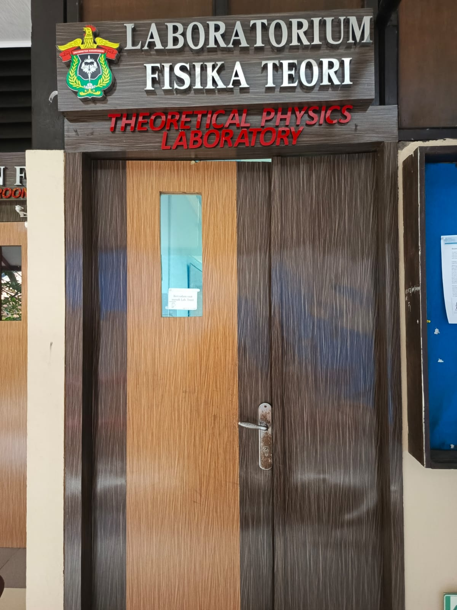

👥 Related Staff

Prof. Dr. rer-nat Wira Bahari Nurdin
Guru Besar / IV.d

Prof. Dr. Tasrief Surungan, M.Sc.
Guru Besar / IV.c

Drs. Bansawang BJ, M.Sc.
Lektor Kepala / IV.a

Eko Juarlìn, M.Si.
Lektor / III.d
🎓 Active Students
Yeni Estefani Parinding
NIM: H021231016
Santri
NIM: H021231012
Nurhaliza
NIM: H021231008
Lab Description
Kelompok Keahlian Fisika Teoretik dan Komputasi mencakup dua bidang, yaitu fisika teoretik dan fisika komputasi. Diskusi yang diadakan antara mahasiswa dan dosen setiap minggu merupakan bagian dari kegiatan kelompok keahlian ini. Diskusi tersebut membahas program kreativitas mahasiswa, pengenalan bahasa pemrograman, serta pengenalan penelitian mahasiswa. Mata kuliah pilihan yang termasuk dalam kelompok keahlian ini antara lain: Aljabar Linear, Teori Perubahan Fasa, Pengenalan Linux, Pengenalan Pemrograman Internet, Teori Relativitas Umum, Mekanika Kuantum, Dinamika Non-Linear, serta Pengenalan Teori Medan Kuantum.
